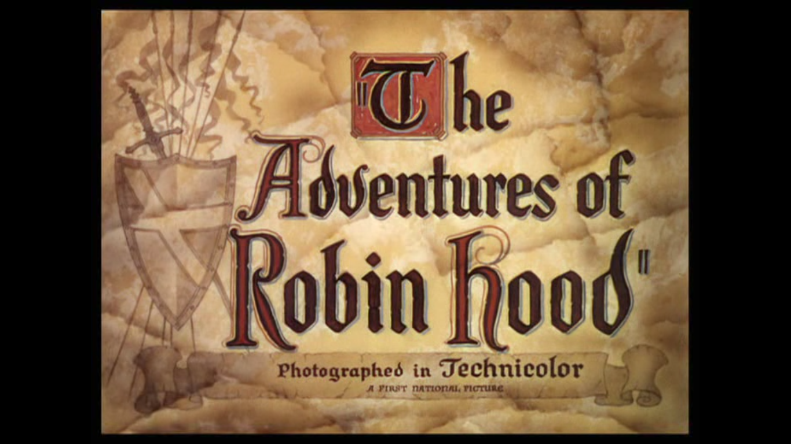
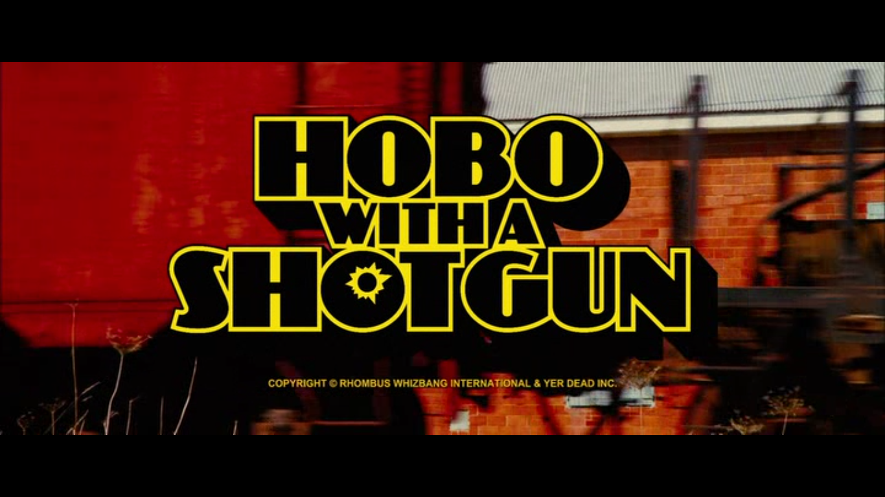

What follows is a series of Title Cards that stood out to me upon watching.
Portal of Pitcairn
Cinephiles
The Adventures of Robin Hood 1938

Further Details
Audio:'Main Title - Muted Fanfare' - William Stromberg
Length through film that title card appears (<1%):
<1%
Drive 2011
Further Details
Audio:'Nightcall' - Kavinsky
Length through film that title card appears (10%):
10%
Hobo with a Shotgun 2011

Further Details
Audio:'Liebesthema/ Überfall Auf Die Kutsche' - Michael Holm
Length through film that title card appears (2%):
2%
Nocturnal Animals 2016
Further Details
Audio:'Wayward Sisters' - Abel Korzeniowski
Length through film that title card appears (1%):
1%
Inherent Vice 2014
Further Details
Audio:'Vitamin C' - CAN
Length through film that title card appears (5%):
3%
Turbo Kid 2015
Further Details
Audio:'Thunder In Your Heart' - John Farnham
Length through film that title card appears (3%):
3%
Cheap Thrills 2013
Further Details
Audio:Baby crying
Length through film that title card appears (97%):
97%
Mandy 2018
Further Details
Audio:'Mandy' Soundtrack - Jóhann Jóhannsson
Length through film that title card appears (63%):
63%
You Were Never Really Here 2017
Further Details
Audio:'Dark Streets' - Johnny Greenwood
Length through film that title card appears (14%):
14%
Maniac 2013
Further Details
Audio:'Maniac' - Rob
Length through film that title card appears (8%):
8%
You're Next 2011
Further Details
Audio:'Looking for the Magic' - Mind the Gap
Length through film that title card appears (97%):
97%
The Grand Budapest Hotel 2014
Further Details
Audio:Silence
Length through film that title card appears (2%):
2%